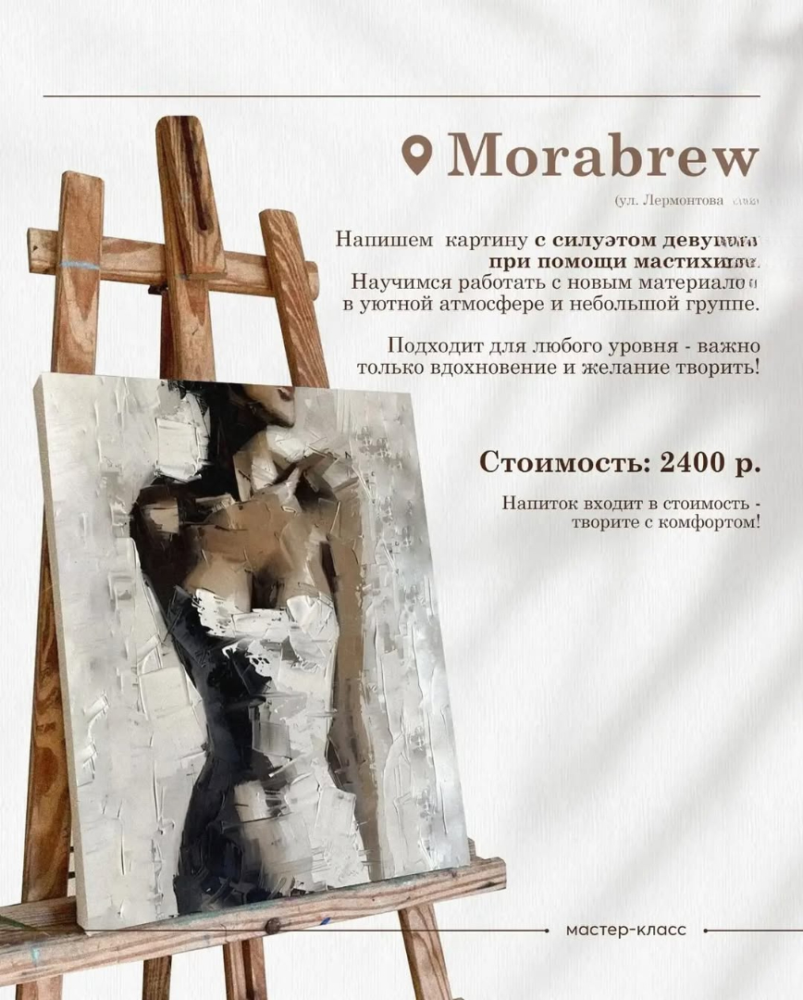
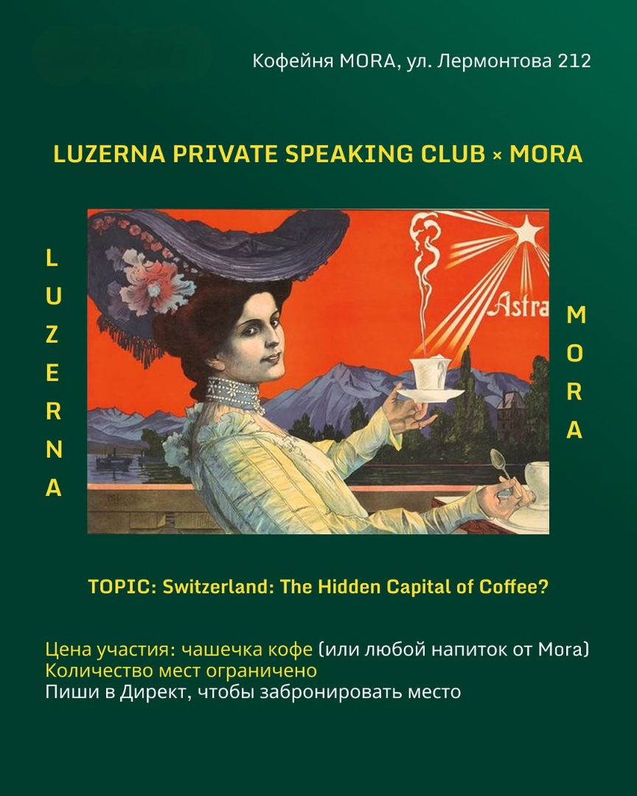
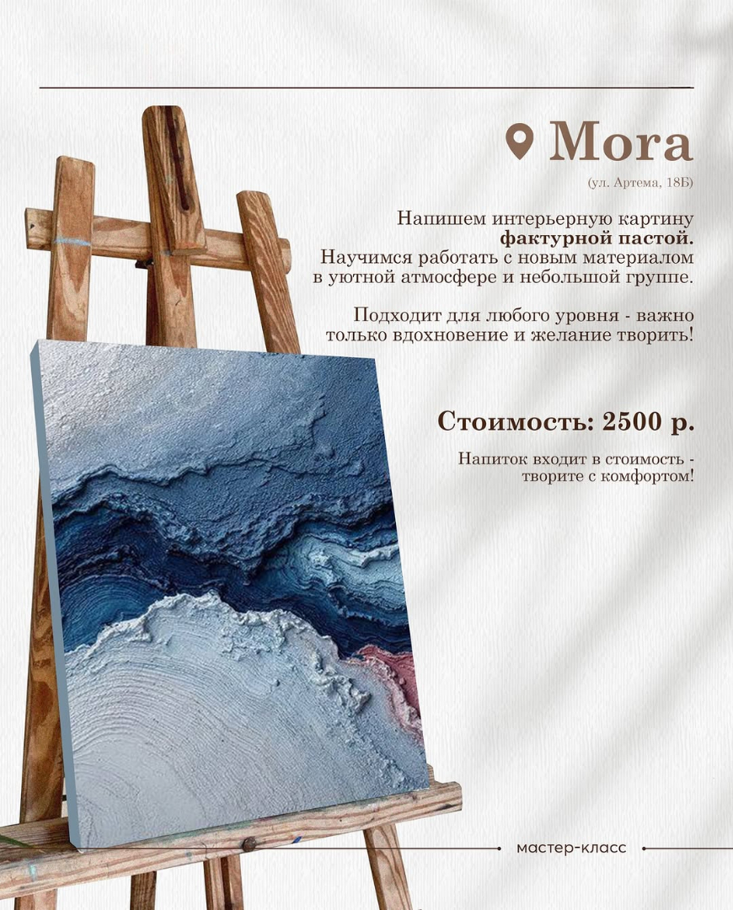
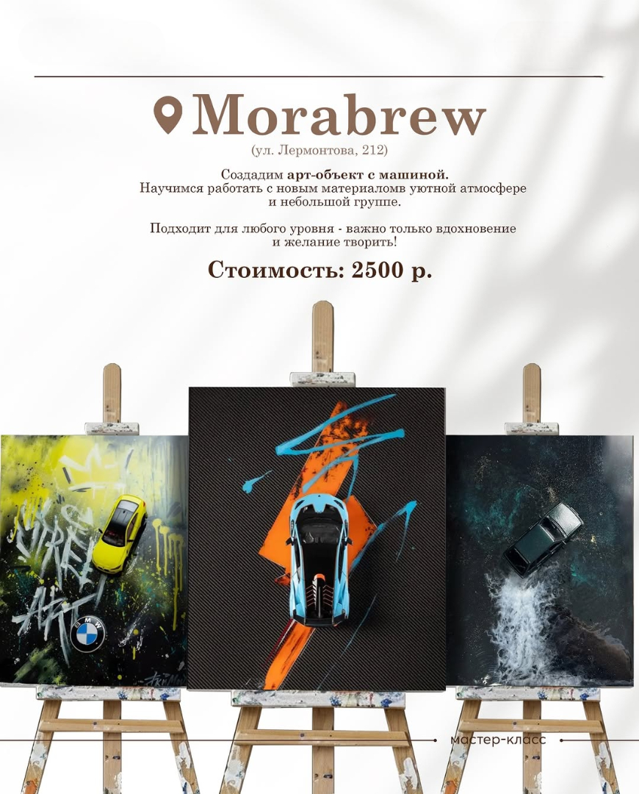
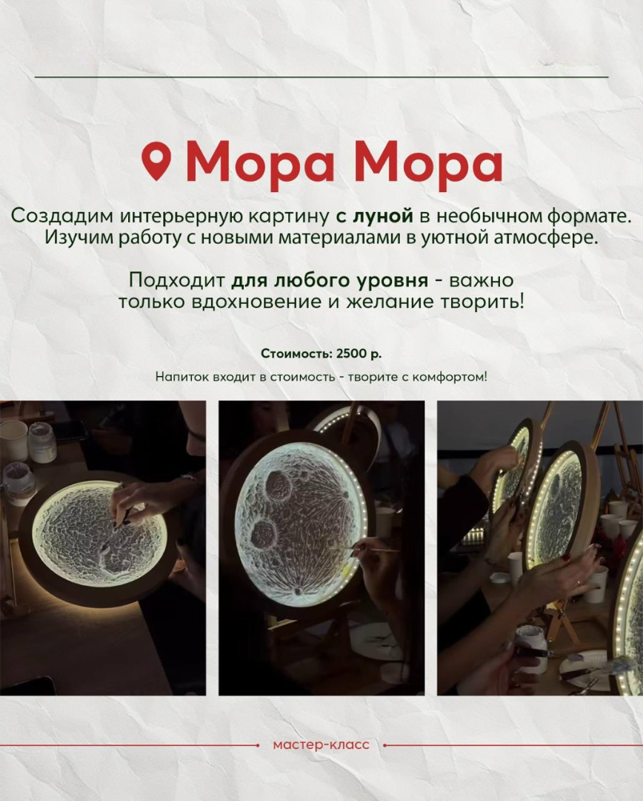

Мастер-класс по живописи мастихином
"Силуэт девушки"
Напишем экспрессивную картину с женским силуэтом,
используя технику работы мастихином.
Научим вас технике "лессировка", создавать фактурные мазки и плавные переходы.
Рисуем, пьем кофе, отдыхаем душой
7 июня 16:00 Лермонтова 212
Новый и увлекательный формат
закрытого speaking club
Приглашаем вас на новую встречу, где обсудим
кофейную столицу мира, у которой нет ни одной кофейной плантации.
Обсудим когда кофе станет жидким золотом
и как работает кофейный маркетинг
14 июня 14:00 Лермонтова 212
Море, которое можно потрогать. Картина за вечер
Создайте объемную интерьерную картину на морскую тематику,
при помощи фактурной пасты. Научим вас работать с новым материалом
и добиваться эффекта волн и пены.
20 июня 16:00 Артема 18б
Арт-объект
для настоящих ценителей авто
Создайте интерьерную картину с автомобилем,
используя современные художественные материалы.
Научим вас работать с фактурными пастами и металликом,
передавать объем, блики и динамику авто.
21 июня 16:00 Лермонтова 212
Арт-объект для ночных мечтателей
Создайте собственную луну - объемную, светящуюся или золотую - на холсте нестандартной формы.
Научим вас работать с люминофором, поталью и фактурной пастой,
передавать рельеф лунной поверхности, ее свечение и ночной ореол.
28 июня 16:00 Артема 18б
Выбери свой формат для идеального досуга
Записаться

Мастер-класс по живописи мастихином "Силуэт девушки"
Напишем экспрессивную картину с женским силуэтом, используя технику работы мастихином. Научим вас технике "лессировка", создавать фактурные мазки и плавные переходы.
Рисуем, пьем кофе, отдыхаем душой
7 июня 16:00 Лермонтова 212

Новый и увлекательный формат закрытого speaking club
Приглашаем вас на новую встречу, где обсудим кофейную столицу мира, у которой нет ни одной кофейной плантации. Обсудим когда кофе станет жидким золотом и как работает кофейный маркетинг.
14 июня 14:00 Лермонтова 212

Море, которое можно потрогать. Картина за вечер
Создайте объемную интерьерную картину на морскую тематику при помощи фактурной пасты. Научим вас работать с новым материалом и добиваться эффекта волн и пены.
20 июня 16:00 Артема 18б

Арт-объект для настоящих ценителей авто
Создайте интерьерную картину с автомобилем, используя современные художественные материалы. Научим вас работать с фактурными пастами и металликом, передавать объем, блики и динамику авто.
21 июня 16:00 Лермонтова 212

Арт-объект для ночных мечтателей
Создайте собственную луну - объемную, светящуюся или золотую - на холсте нестандартной формы. Научим вас работать с люминофором, поталью и фактурной пастой, передавать рельеф лунной поверхности, ее свечение и ночной ореол.
28 июня 16:00 Артема 18б
Выбери свой формат для идеального досуга
Записаться